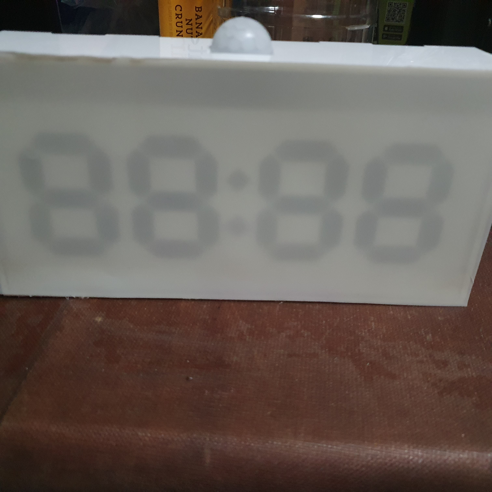

Project Sketch
.jpg)
The way this product works is by waving a hand at the PIR sensor. It will activate the NeoPixels which display the time.
The way this product works is by waving a hand at the PIR sensor. It will activate the NeoPixels which display the time.
The idea of the RGB clock is by a user named 'Mark Daniel Belarmino' on the ProjectHub. The parts for his project consists of 140 Neopixels, Arduino ATmega2560 & RTC DS1307. In his project, he 3D printed his body work and have 4 LEDs per digit. In contrast, i will be using a 28 Neopixels, Arduino UNO/NANO & RTC DS3231. I also followed his code and made a few changes by adding a PIR input and 7-segment binanry input. As for the wiring of the NeoPixels, i was recommended by my lecturer to watch 'DIY Arduino LED clock | Arduino Projects | 7 Segment Display | LED digital Clock from Cardboard' by 'Art, Craft and Knowledge'. The video shows me how to connect each pixel to display the time.
References:
https://youtu.be/vkphJ86zm0Q
This is a step-by-step "How-to":
CAD:Use CAD to design and visualize the body and 3D printed items. For the bodywork, design a rectangular box without the front panel with box joints and the dimensions from the preliminary sketch. As for the backplate, first create slots with the thickness of the arcylic on the sidewall. Next, midplane the sidewall. Finally, create a rectangle face on the midplane and combine it with the bodywork. The 7-Segment is created by using the canvas tool. Trace the 7-segment display. Using the rectangular pattern tool create 3 more display.
There is two 3D printed item in this project. The first item is called a clip. To design the clip make sure the slot is as wide as the thickness of the arcylic. The second item is the holder for the NANO and the RTC. Using the dimension of the elctronics, create rectangles in a bigger rectangles. Create slots in the holder for better wire management.
3D Printing:After designing the intended items for printing, we then proceed to the printing stage. First we have to slice it in the the CURA software, we also must ensure that printing settings are correct. The settings are Material: PLA, Nozzle:0.4mm, Layer Height:0.2mm, Wall Thickness:0.8mm, Wall Count:4, Infil:15% Bed Adhesion:Brim. Ensure that the first 4 layers is printed properly before leaving.

Laser Cutting:Pick out the material and measure its thickness. I went for a 3mm white arcylic. Next import your sketches in LibreCAD and arrange it to ensure that no material is wasted. Save it as a DXF. file. Next import the file into CorelDraw. Ensure that there is enough space on the mateial for the cut. If not measure the limited space, use the ruler in CorelDraw as the guideline and fit in the pieces. Change the dimension to 'hairline'. After preparing the sketches, prepare the printer by ensuring the setting for the cut is correct. Turn on AutoFocus, change Power: 90%, Speed: 15% and Frequency: 90% , don't forget to set in the thickness of the material. Next prepare the printer for the cut.
Printer Paperation:
1. Go to config and press rest to (0,0).
2. Jog the nozzle to space available.
3.Open lid and begin printing to check there is enough space.
4. Close lid to print, make sure correct
file is use.
After print is done make sure it cut through if not repeat the cutting procedure.
Microcontroller:I use the Arduino UNO for testing and debugging and for the final project i use the NANO as it is smaller then the UNO
I/P:RTC DS3231 && PIR sensor
O/P:NeoPixels LED
| Qty | Item description | Costs |
|---|---|---|
| 1 | Arduino Nano | $8.05 |
| 1 | HC-SR501 PIR Sensor | $4.50 |
| 1 | DS3231 RTC | $4.60 |
| 30 | AdaFruit NeoPixels RGB Strip | $19.95 |
| 2 | 3mm Arcylic Sheet | $8.05 |
I secure the walls with tape so that i can fix in the neccessary parts
Glue the side walls in place with the bottom wall
Drill in holes for wires for the Neopixels to keep it nice and tidy
Slot in the NeoPixels board
Slot in the PIR sensor in the opening and glue the top wall to the sides wall
Glue down the clip

Glue on translucent sheet on the 7-segment board
Slot in the 7-segment into the clips

Glue another translucent sheet as the "front" panel
Cut out the holes for the plug & screws
Leave the back wall unglue, for easier accesibility to the electronics
The project was a success, even though the coding took a long time. There were no defect for laser cuts and the printed model. There is a minor problem with the PIR sensor, there seem to be a delay when trying to activate it. I should also try to improve my soldering as it cause many wiring problem. In terms of upgradability, i could add rotary switches so that the clock can be manually adjust.
1. Insert plug into the slot
2. Wave hand to activate the clock
3. Clock will turn off after awhile